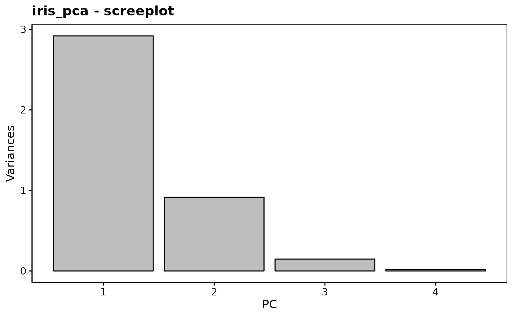
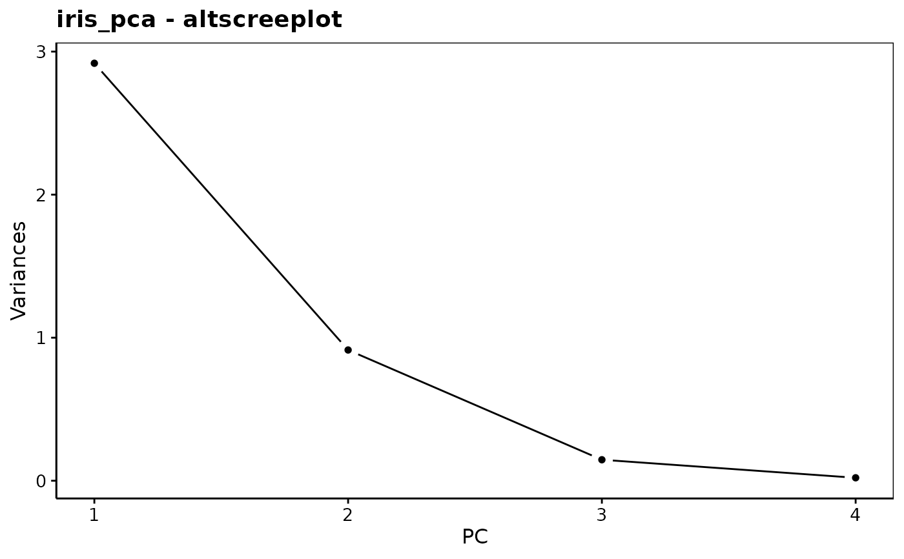
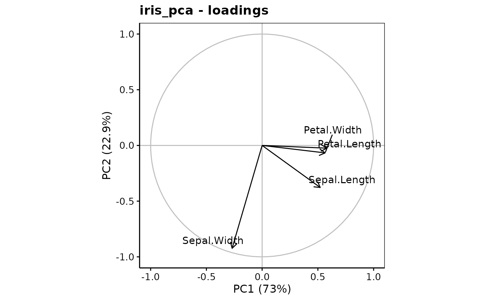
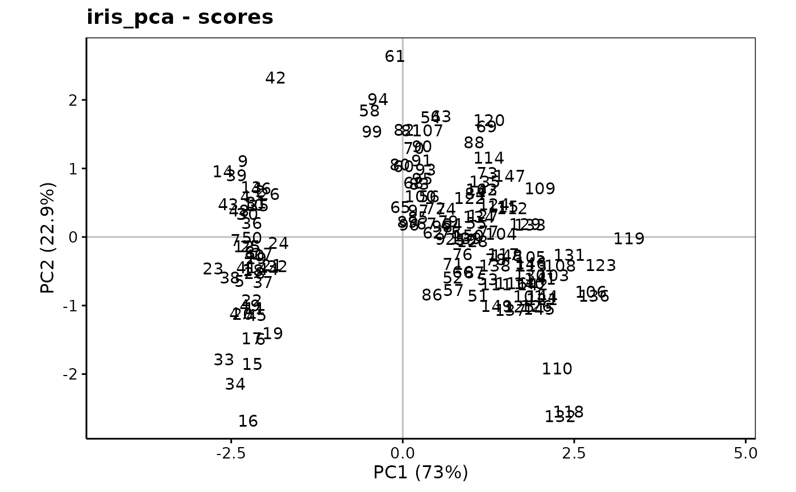
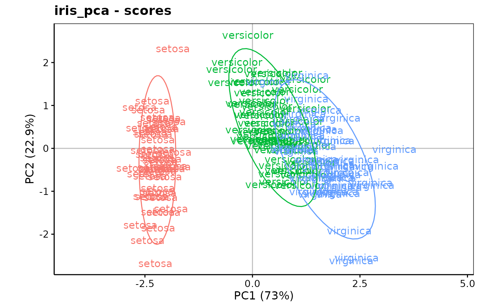
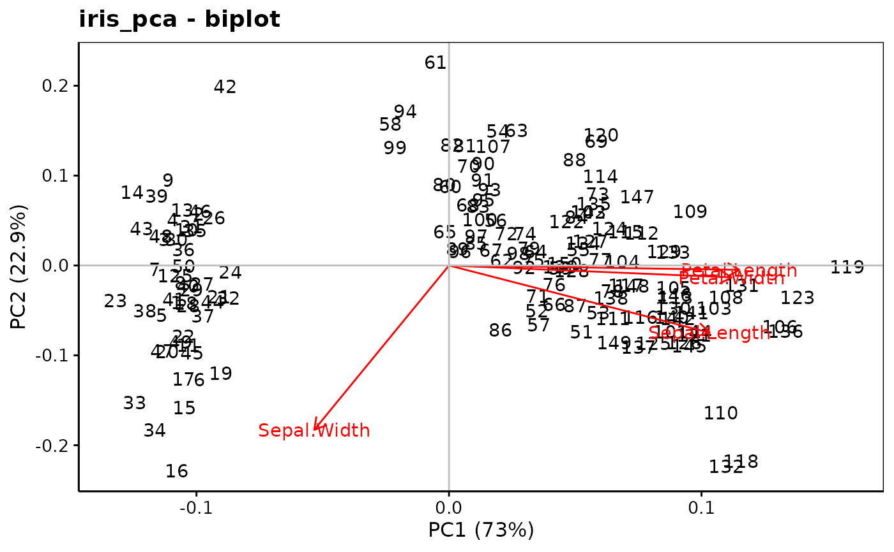

Principal Component Analysis (PCA)
pca(x, ...)
# S3 method for pcomp
autoplot(
object,
type = c("screeplot", "altscreeplot", "loadings", "correlations", "scores", "biplot"),
choices = 1L:2L,
name = deparse(substitute(object)),
ar.length = 0.1,
circle.col = "gray",
col = "black",
fill = "gray",
scale = 1,
aspect.ratio = 1,
repel = FALSE,
labels,
title,
xlab,
ylab,
...
)
# S3 method for pcomp
chart(
data,
choices = 1L:2L,
name = deparse(substitute(data)),
...,
type = NULL,
env = parent.frame()
)
# S3 method for princomp
augment(x, data = NULL, newdata, ...)
# S3 method for princomp
tidy(x, matrix = "u", ...)
as.prcomp(x, ...)
# S3 method for default
as.prcomp(x, ...)
# S3 method for prcomp
as.prcomp(x, ...)
# S3 method for princomp
as.prcomp(x, ...)Arguments
- x
A formula or a data frame with numeric columns, for
as.prcomp(), an object to coerce into prcomp.- ...
For
pca(), further arguments passed toSciViews::pcomp(), notably,data=associated with a formula,subset=(optional),na.action=,method=that can be"svd"or"eigen". SeeSciViews::pcomp()for more details on these arguments.- object
A pcomp object
- type
The type of plot to produce:
"screeplot"or"altscreeplot"for two versions of the screeplot,"loadings","correlations", or"scores"for the different views of the PCA, or a combined"biplot".- choices
Vector of two positive integers. The two axes to plot, by default first and second axes.
- name
The name of the object (automatically defined by default)
- ar.length
The length of the arrow head on the plot, 0.1 by default
- circle.col
The color of the circle on the plot, gray by default
- col
The color for the points representing the observations, black by default.
- fill
The color to fill bars, gray by default
- scale
The scale to apply for annotations, 1 by default
- aspect.ratio
height/width of the plot, 1 by default (for plots where the ratio height / width does matter)
- repel
Logical. Should repel be used to rearrange points labels?
FALSEby default- labels
The label of the points (optional)
- title
The title of the plot (optional, a reasonable default is used)
- xlab
The label for the X axis. Automatically defined if not provided
- ylab
Idem for the Y axis
- data
The original data frame used for the PCA
- env
The environment where to evaluate code,
parent.frame()by default, which should not be changed unless you really know what you are doing!- newdata
A data frame with similar structure to
dataand new observations- matrix
Indicate which component should be be tidied. See
broom::tidy.prcomp()
Value
pca() produces a pcomp object.
Examples
library(chart)
library(ggplot2)
data(iris, package = "datasets")
iris_num <- iris[, -5] # Only numeric columns
iris_pca <- pca(data = iris_num, ~ .)
summary(iris_pca)
#> Importance of components (eigenvalues):
#> PC1 PC2 PC3 PC4
#> Variance 2.92 0.914 0.1468 0.02071
#> Proportion of Variance 0.73 0.229 0.0367 0.00518
#> Cumulative Proportion 0.73 0.958 0.9948 1.00000
#>
#> Loadings (eigenvectors, rotation matrix):
#> PC1 PC2 PC3 PC4
#> Sepal.Length 0.521 -0.377 0.720 0.261
#> Sepal.Width -0.269 -0.923 -0.244 -0.124
#> Petal.Length 0.580 -0.142 -0.801
#> Petal.Width 0.565 -0.634 0.524
chart$scree(iris_pca) # OK to keep 2 components

chart$altscree(iris_pca) # Different presentation

chart$loadings(iris_pca, choices = c(1L, 2L))

chart$scores(iris_pca, choices = c(1L, 2L), aspect.ratio = 3/5)

# or better:
chart$scores(iris_pca, choices = c(1L, 2L), labels = iris$Species,
aspect.ratio = 3/5) +
stat_ellipse()

# biplot
chart$biplot(iris_pca)
